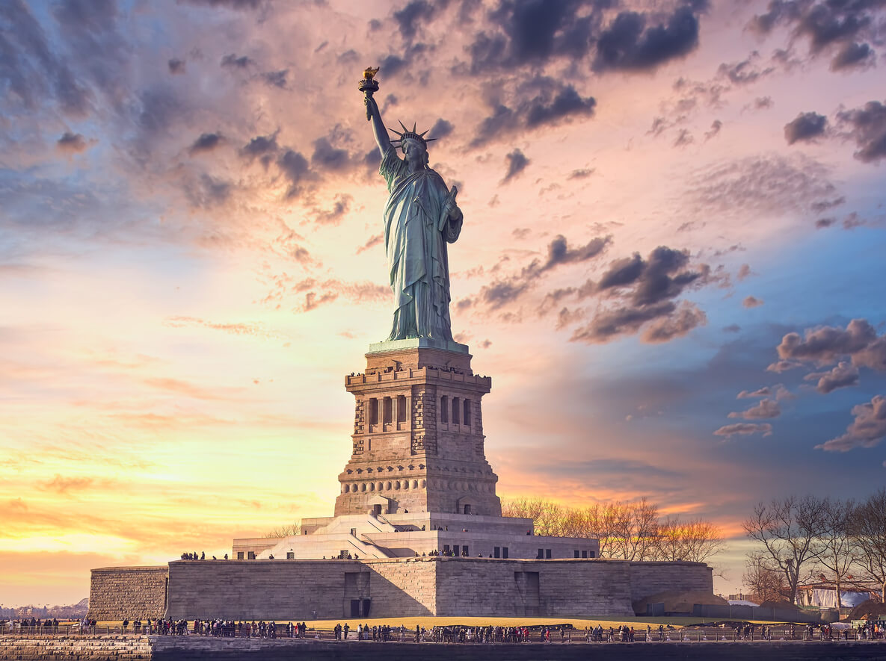

AmericaGo
Estados Unidos
Estados Unidos es una tierra de vasta diversidad y maravillas, cautivando a los viajeros con su mezcla única de vibrantes metrópolis, impresionantes maravillas naturales y rica historia. Desde las luces deslumbrantes de Nueva York hasta la majestuosidad del Gran Cañón, Estados Unidos se revela como un destino que satisface todos los deseos y ansias de aventura de los viajeros. as emociones y la diversión alcanzan su punto álgido en Las Vegas, la ciudad que nunca duerme, y en Orlando, el paraíso de los parques temáticos. Estados Unidos es un crisol de oportunidades y descubrimientos, donde cada rincón ofrece un capítulo distinto en la historia de este vasto y variado país.
Estatua de la libertad

La Estatua de la Libertad es una imponente y majestuosa figura que se alza en la entrada del puerto de Nueva York, dando la bienvenida a los visitantes y sirviendo como un icono emblemático de libertad y oportunidad. Con una altura total de alrededor de 93 metros, incluyendo el pedestal y la antorcha, la estatua es aún más impresionante cuando te encuentras cerca de ella en la Isla de la Libertad. La figura femenina, diseñada por Frédéric Auguste Bartholdi y dedicada en 1886, representa a Libertas, la diosa romana de la libertad. Sostiene una antorcha elevada en su mano derecha, que brilla intensamente tanto de día como de noche. Desde la plataforma de observación en la corona de la estatua, se pueden disfrutar vistas panorámicas del puerto de Nueva York y la ciudad en sí. Es un lugar popular para capturar fotos memorables y apreciar la grandeza de la ciudad.
Golden Gate
El Golden Gate, uno de los íconos más reconocibles y emblemáticos de San Francisco y Estados Unidos, es un prodigio de ingeniería y belleza natural. Este puente colgante majestuoso conecta la península de San Francisco con el condado de Marin, extendiéndose sobre la entrada de la bahía de San Francisco. Con su distintivo color naranja dorado y su elegante estructura de cables, el Golden Gate Bridge se alza en contraste con el horizonte de la ciudad y las aguas azules del océano Pacífico. El puente es una proeza arquitectónica que se ha convertido en un símbolo no solo de San Francisco, sino también de innovación y ambición humana. Caminar, conducir o pedalear a través del puente brinda una experiencia única, con vistas panorámicas de la bahía, la isla de Alcatraz y la línea del horizonte de San Francisco.